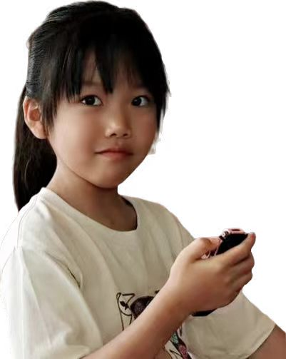

亲爱的Zoe，你好呀。
写这封信的时候，我们回想到了三年前的那一幕——那天，你在天府机场，背着小小的书包，带着自信和好奇的微笑，勇敢的道别，踏上了新的旅程。
那个画面，我们记到现在。
你的眼睛里，装着满满的勇敢，和对这个世界毫无保留的好奇。
三年过去了。你在加拿大学会了用另一种语言做梦，习惯了冰上的翩翩起舞，交到了地球另一端的朋友。这些经历，一点都不是"需要补上的缺口"——它们是你长出的一双翅膀，谁也拿不走，也是你一生中最美好的回忆。
现在，你要回到我们自己的国家啦，有一点点期待，也有一点点紧张——对吗？这太正常了，换作是谁都一样。
接下来这40天，我们想陪你一起，开启一段新的奇妙旅程。
它不是考试，不是任务，只是一段小小的前行。你会遇见一首让你心怦怦跳的古诗，会解开一道让你忍不住"哇"出声的数学题，当然，也可能会碰到让你皱起眉头的难题。
没关系的。真的没关系。
如果遇到怎么也想不明白的地方，就对自己说："我只是还没学会，不是学不会。"你身后还有爸爸妈妈永远的陪伴支持。
如果哪天你累了、不想做了，就停下来休息一下，我们不会催你。
你已经独自走过那么远的路了。
这40天，不过是你美好生活中的一段小小的别样的风景。
Zoe，爸爸妈妈不需要你每天都是满分。
我们想看到的，是你愿意试一试——哪怕只是一小步。跌倒了大不了拍拍土，觉得难了大不了歇一歇，明天再来。
你知道吗？三年前在机场的那个你，和现在正准备出发的你，是同一个人——那个勇敢的、好奇的、不怕未知的小孩，一直都没有离开过。
所以，带上你的翅膀，慢慢地、稳稳地往前走。
无论你走到哪里，
回头的时候，
爸爸妈妈永远都在你身后。
永远爱你的
爸爸妈妈
2026年夏天